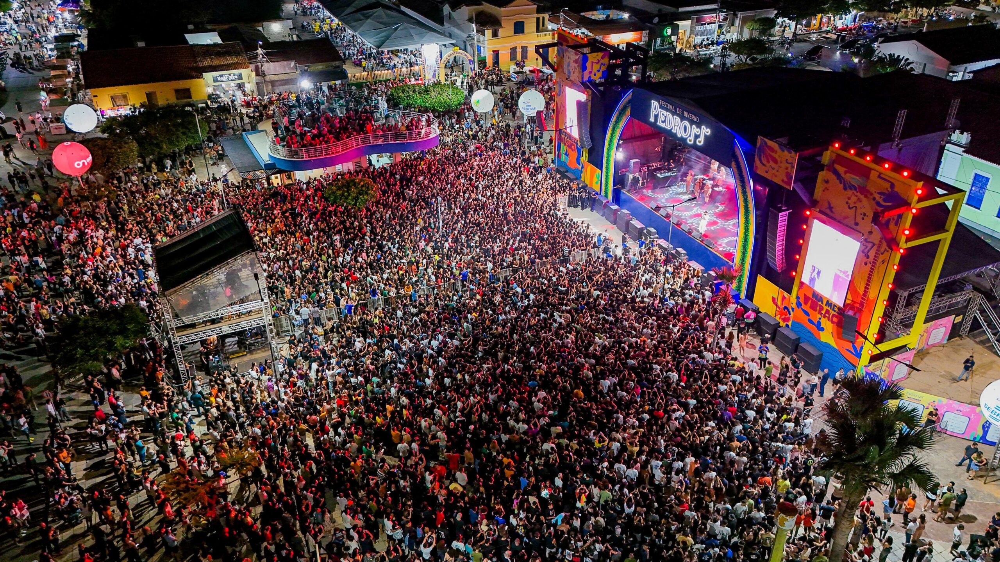
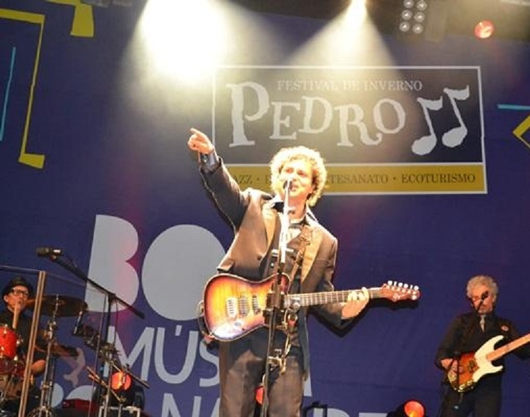

Festival de Inverno de Pedro II
O Festival de Inverno de Pedro II é o principal evento cultural do município, reunindo música, arte, gastronomia e tradições regionais.
Durante o festival acontecem shows, apresentações artísticas, feiras de artesanato, exposições e experiências culturais únicas.
Programação Oficial
📅 Quinta-feira • 12 de Junho
18:00
Abertura do Festival
Palco Principal • Praça Domingos Mourão
19:30
Feira de Artesanato & Gastronomia
Praça da Matriz
21:30
Show Musical – Atração Nacional
Palco Principal
📅 Sexta-feira • 13 de Junho
18:00
Apresentações Culturais
Teatro Municipal
20:00
Show Regional
Palco Cultural
22:00
Show Principal da Noite
Palco Principal


